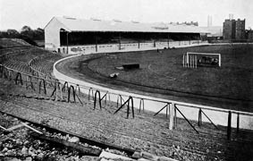

A Stamford Bridge London Fulham városrészében, Hammersmith and Fulham kerületben található 19. század végén épült atlétikai pálya, amely 1905 óta a Chelsea FC otthona.

A stadiont The Bridge-ként is szokták nevezni a szurkolók körében. Befogadóképessége 42 055 fő, ezzel a Stamford Bridge a hetedik legnagyobb stadion a Premier League-ben, és a legkisebb a Nagy négyes csapatai közt.
A stadion a nevét egy nyugat londoni híd, és annak patakja után kapta, amely közelében fekszik. A Sanford hídról és Stanford Creek nevű patakról van szó,amely nevekből máig sem ismert okokból kialakult a stadion mai neve. Vélhetően, az is befolyásolta a név kialakulását, 1066-ban egy híres Anglia szempontjából igen fontos katonai ütközet volt a norvégok és az angolok között egy York melletti kisvárosnál Stamford Bridge-nél és amelyet az angolok megnyertek: ez volt a Stamford Bridge-i ütközet.
Az eredeti arénát Archibald Leitch tervezte .A Stamford Bridge pálya 1870-es években nyitott meg, egészen pontosan 1877. április 28-án, de az első 28 évében szinte kizárólag atlétikai versenyek lebonyolítására, illetve edzésre használta a London Athletic Club
Az első komolyabb építkezésig egészen az 1930-as évekig kellett várni, amikor megépítették a híres Shed End-et. A fennmaradt dokumentumok szerint érdekes látványt nyújtott teteje, mely majdnem szabadon hagyta a lelátó nagy részét.A hatvanas évektől kezdve a Shed lett a kemény mag helye itt született a legtöbb ma is ismert szurkolói dal. Nevének jelentése: pajta, istálló, a név eredete ismeretlen. A Shed End-et 1994. május 7-én rendezett, Sheffield Utd elleni meccs után átépítették. A második nagyobb építkezés North Stand volt amelyet 1939-ben építettek, és mivel teljesen más stílusban építették nagyon elütött a lelátó többi részétől. Később, 1975-ben hozzáfogtak a North Stand modernizálásához . A hatvanas évek közepén a East Stand állóhelyes lelátóját modern , ülőhelyes lelátóvá építették át. Azonban a végső alakját az East Stand a hetvenes években nyeri el amikor is a kor viszonyainak megfelelő ultramodern lelátóvá alakítják át és ma is szinte változatlan formában megtekinthető. Az utolsó átépítés a kilencvenes években történt, amikor is Angliában stadionrekonstrukciós program keretein belül– az összes állóhelyet fel kellett számolni az arénákban. Így ért véget a Shed End,és a North Stand története is. A stadion mai formáját 2001 nyarán nyerte el. Mellette található Chelsea Village szabadidős központ részeként két négycsillagos hotel, öt étterem és több konferenciaterem.
REKORDOK:
- Legnagyobb nézettség:82 905 fő az Arsenal ellen 1935. október 12-én (nem hivatalos források szerint azonban több meccs is elérte a 100 000 fős nézőszámot)
- Legkisebb nézettség: 3000 fő Chelsea a Lincoln ellen 1906-ban(Az NB1-ben átlagnézőszám 2018-ban!)
Átlag nézőszámok:
- 1992–93: 18 754
- 1993–94: 19 211
- 1994–95: 21 062
- 1995–96: 25 598
- 1996–97: 27 617
- 1997–98: 33 387
- 1998–99: 34 571
- 1999–00: 34 532
- 2000–01: 34 700
- 2001–02: 38 834
- 2002–03: 39 784
- 2003–04: 41 234
- 2004–05: 41 870
- 2005–06: 41 902
- 2006–07: 41 909
- 2007–08: 41 397
- 2008–09: 41 464